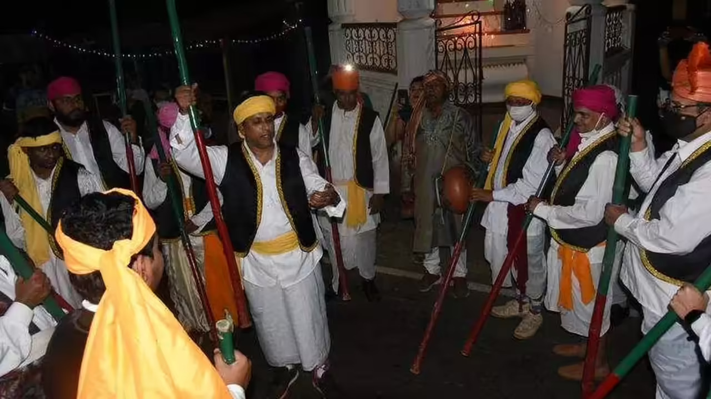
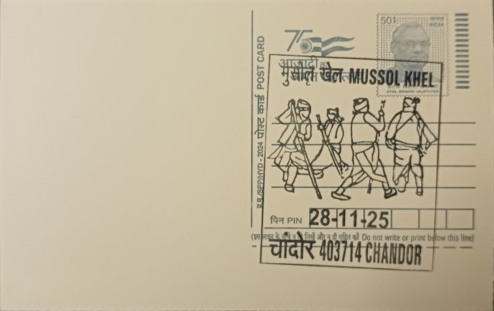
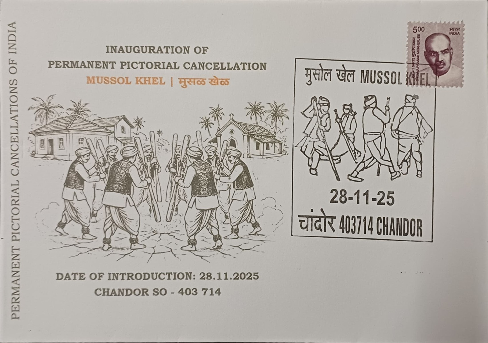
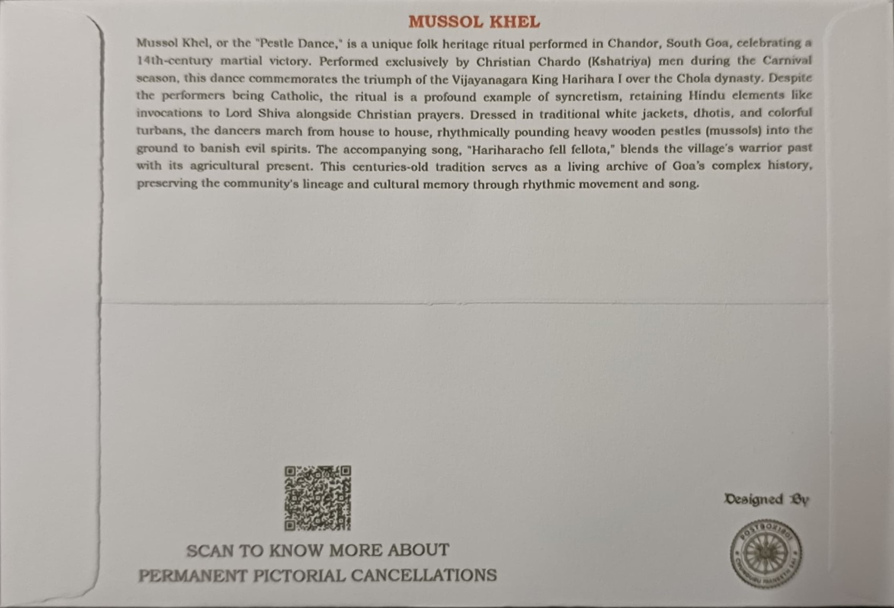

Mussol Khel—also known as Mussol nach or Musallam khel—is an ancient and unique traditional folk dance from the village of Chandor in South Goa, India. Chandor, historically known as Chandrapur, was once the capital of the Kadamba dynasty, and the origins of this tradition are deeply rooted in local history and legend. The term mussol literally means “pestle,” referring to the wooden pestle used in the performance, and the dance is commonly described as a pestle-pounding ritual dance that has been performed for several centuries by members of the Christian Kshatriya community known as Chardos—descendants of the warrior class who settled the village long ago. This tradition is maintained through annual performances during the Carnival season, specifically on the Monday and Tuesday of Carnival in Chandor’s wards such as Cotta and Cavorim.
The origin of Mussol Khel is linked both to Goa’s early medieval history under the Kadamba dynasty (circa 980–1005 AD) and to the belief that the dance originally commemorated the victory of the Vijayanagar king Harihara II over the Cholas. Scholars and local tradition suggest that performances began in the ancient capital as a martial and celebratory ritual; over time, the dance became part of the intangible cultural heritage of Chandor’s Catholic community even as it maintained symbolic references to pre-Portuguese heritage.
Performance style for Mussol Khel is distinct. The dancers, predominantly men of the Chardo community, form a circle and move rhythmically, pounding their pestles forward and backward in synchronization with traditional songs in Konkani. They sing as they dance, accompanied by percussion instruments such as the ghumot and zanze, which provide rhythmic accompaniment and help sustain the tempo of the dance. In some accounts, a performer may take on symbolic roles—such as a person dressed as a bear or participants carrying torches—echoing more elaborate historical forms of the tradition.
The costumes worn during Mussol Khel reflect both historical and martial influences. Dancers don a dhoti (dhontir), a traditional jacket (cullet or waistcoat), a pagdi or turban (mundásso), and ghungroos on their ankles. The pestles are held upright, usually pointing towards the center of the circle as dancers move a step backward and a step forward in measured beats. This attire is both functional and symbolic, evoking the pre-colonial martial identity of the community while marking the ceremonial nature of the event.
Mussol Khel is prevalent specifically in Chandor village and is not broadly practiced across Goa, making it one of the rare surviving folk traditions tied to a specific locality and community. Performers travel from house to house during the Carnival nights of Monday and Tuesday, offering their dance and song at the homes of local families tied to the original Kshatriya settlers; in households where there has been a recent death, the troupe pauses to offer prayers instead of performing. Lamps and candles are often lit outside homes during the procession, reinforcing the ritual’s communal and spiritual dimensions. While the practice continues to be upheld annually, there is concern that migration and changing demographics are leading to fewer participants, posing challenges to the tradition’s long-term survival.

Private Inaugural Cover - Front

Private Inaugural Cover - Back
| Date of Introduction | November 28, 2025 |
|---|---|
| Address | Sub Postmaster, |
| Chandor SO, | |
| South Goa (dt.), Goa - 403714. |